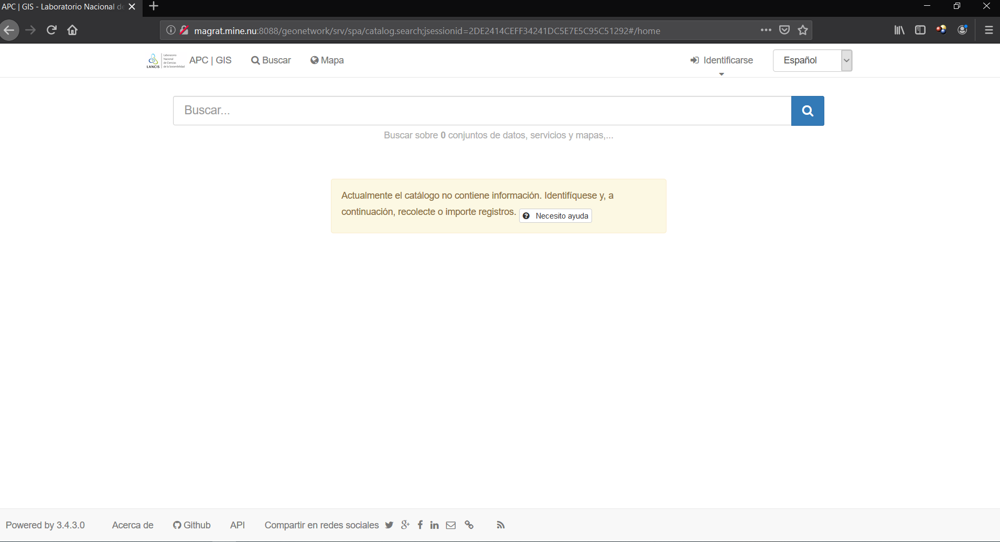
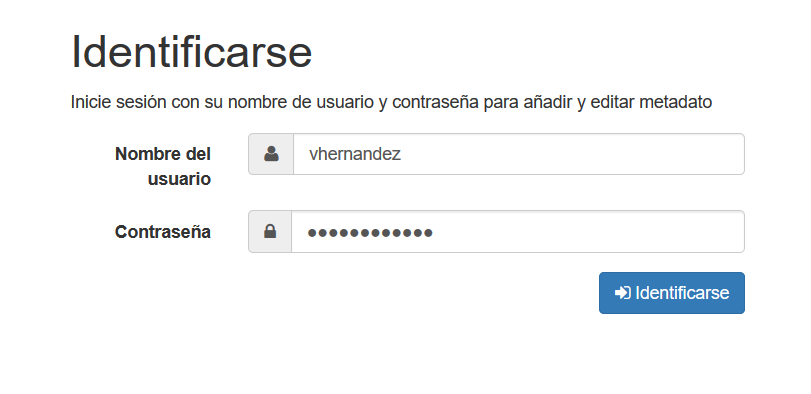
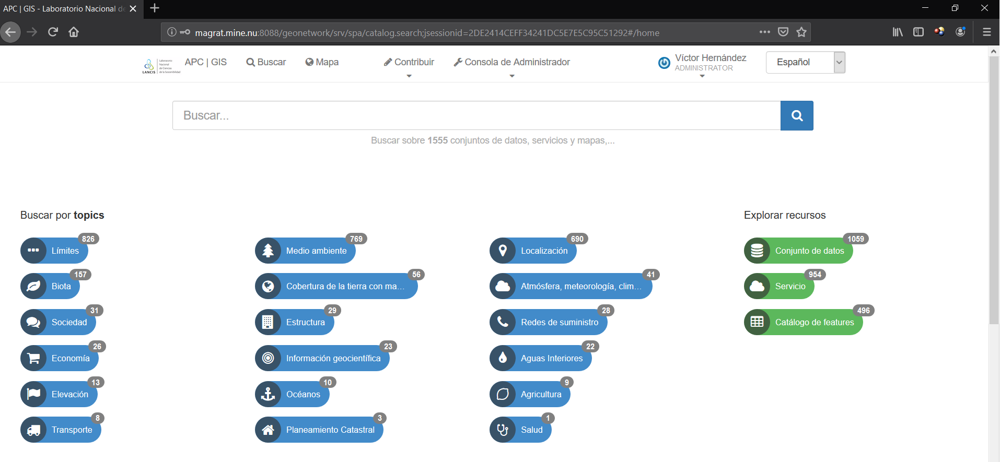
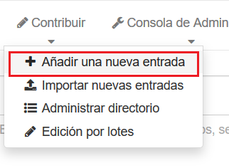
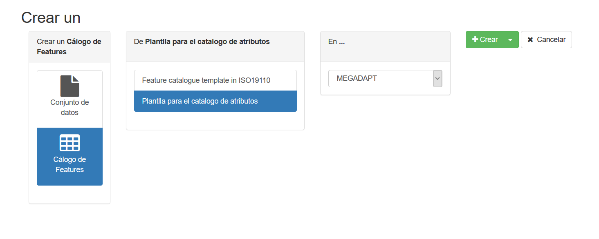
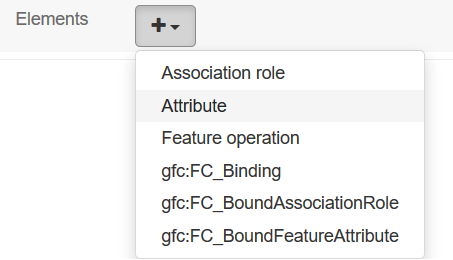
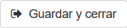

Crear un metadato¶
Ingreso a la plataforma¶
liga o url de la plataforma:
http://magrat.mine.nu:8088/geonetwork/
Si la cuenta ya ha sido validada y confirmada mediante correo electronico, ingresar con el usuario y contraseña registrada en la solicitud de la cuenta.
Cuando el inicio es exitoso, se muestra la página principal y se visualizarán las entradas recientes.
Crear el metadato de la tabla de atributos¶
Este metadato describe los campos de la tabla de atributos
Nota
Todo metadato de atributos comienza con la CDA_
Contribuir > Añadir una nueva entrada
- Seleccionar Cálogo de Features en la columna de crear un conjunto de datos.
- Seleccionar Plantilla para el catalogo de atributos
- Seleccionar En… el repositorio al cual pertenece
dar clic en Crear
Aparecerá en la pantalla el formulario para crear el metadato, los campos a llenar son los siguientes:
| Campo | Descripción |
|---|---|
| Nombre | Comienza con la sigla CDA_ seguido del nombre de la capa sin extensión ej: CDA_mercado_sobre_ruedas |
| Alcance | Describir en general la capa |
| Nombre individual | Nombre de la persona que proporciono o generó el recurso |
| Nombre de la organización | Nombre de la organización o institución donde proviene el recurso |
| Nombre del cargo | Describir el cargo o área en la que trabaja |
| Ciudad | Ciudad donde se ubica la organización |
| Área administrativa | Alcaldía o municipio |
| Código postal | CP |
| País | País de donde se ubica la organización |
| Mail de la persona que proporcionó o generó el recurso | |
| Rol | Autor,Distribuidor, Guardían, Procesamiento, Propietrario, entre otros. |
Atributos¶
La parte de los atributos esta definida por la sección Elements
| Campo | Descripción |
|---|---|
| Member name | Nombre |
| Definition | Descripción del campo especificando unidades si es que aplica |
| gco:lower | Número o índice del campo en la tabla de atributos (comienza en cero) |
| Tipo del nombre | Tipo del campo (flotante,entero,texto, entre otros |
Nota
Para agregar un elemento nuevo, clic sobre el botón + de Elements y seleccionar Atributte
Para finalizar y gardar el metadato dar clic en
